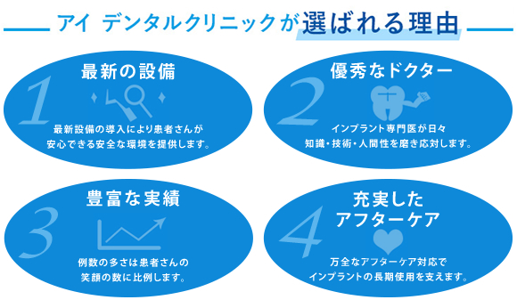
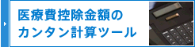
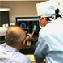
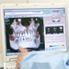
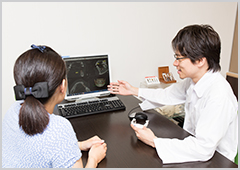
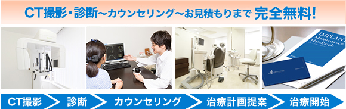
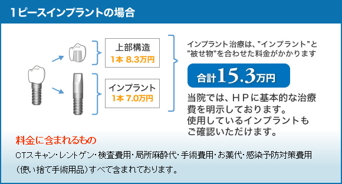
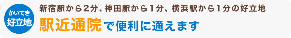

アイデンタルクリニックでは、ＣＴ撮影から診断、カウンセリング、治療計画提案まで、すべて専門医が無料で行っています。
2回目、3回目のカウンセリングが必要な場合でも、すべて無料で行い、最適な治療の計画を提案し、患者様と一緒に選択いたします。
CT無料・診断無料についてはこちら
アイデンタルクリニックではインプラント１本が70,000円～とリーズナブルな価格と高品質を両立しております。
料金についてはこちら
インプラントの治療費は、医療費控除の対象にすることが可能です。
確定申告で医療費控除の申請をすることで支払った金額の一部が戻ってきます。通院に公共交通機関を使用した場合、交通費も医療費控除の対象となります。
| 医療費控除についてはこちら |  |
2分ほどの動画です。ぜひご覧下さい。
この歯科専用ＣＴなら、上下左右正面裏側と３６０度からの確認が可能です。パノラマ写真では、歯や顎の骨を正面からしか確認出来ません。
顎の骨は窪みや傾きがあり、神経や血管が多く通っています。その流れは複雑で、パノラマ写真（レントゲン写真）では見落としてしまいます。
当院では、ＣＴで顎の状態を立体画像で確認して、神経や血管を傷付けることなく、インプラントを埋め込みます。
安全で正確な手術のために、ＣＴは欠かすことが出来ません。手術の前後にＣＴ画像を患者様と一緒に見ながら、歯の状態をご説明致します。手術前後の歯の状態を比較して、施術状態を把握して頂きます。
詳しくはこちら
- 
- 実際に撮ったＣＴ画像を一緒に見ながら歯の状況をご説明します。
- 
- 全ては患者さまの安全で正確な手術のためです。
インプラント専門医ではなく歯科衛生士がCT撮影やカウンセリングを行う医院もあるようですが、専門医でないと適切な診査・診断、治療計画の立案ができません。
CT撮影無料と謳いながら、実際に成約しなかった場合に料金が発生する医院もあるようですのでご留意ください。


当院のドクターは、全員が経験豊富なインプラント専門医のプロ集団です。
国内、海外の各種学会や研修会に参加したり、東京大学、慶應義塾大学、東京歯科大学等の大学や病院との連携で日々、インプラント技術の向上に努めております
詳しくはこちら

当院では、キャンペーン価格や割引の多用など、複雑な価格体系で患者様に安い印象を与えるような不適切なお見積りはいたしません。
初回カウンセリング時にインプラント専門医が、お口の状態にもっとも適した治療計画とお見積もりを説明いたします。
※症状によっては、セカンドカウンセリングを行うこともありますが、カウンセリングは全て無料で対応いたしますのでご安心ください。
詳しくはこちら
高額な費用が掛かり経験の少ない一般医と、手頃な費用の圧倒的症例数を誇る専門医、あなたはどちらを選びますか？
一般の歯科医では、インプラント手術が月に１例あれば良い方です。当医院はインプラントに特化した専門の歯科医院。月に行う施術は２２０例を超え、約５００本の治療を行っています。１日に５０件を超えるお問い合わせを頂き、専門医としてご質問にお答えしています。施術経験豊富な医師が、累計30,000本の手術を行いました。
- 私どもは豊富な経験によって培った技術を、より多くの方に提供したいと考えています。
- 経験を元に『組織化』『効率化』をはかり、皆様に快適なインプラントをご提供しています。
当院で明示している「累計30,000本」というのは、実際に患者さまに施術を行ったインプラントの埋入本数で、当院のドクターの症例数を正確にカウントしたものです。
インターネットの広告やHPで、インプラントとアバットメントを二重にカウントしていたり、施術実績ではなくインプラントメーカーの販売本数を医院の実績のように誤解させたりするような悪質なケースがあるようですので、ご留意ください。
インプラント手術には「経験豊富な麻酔医の立会い」
「厳密な生体のモニタリング」が必要不可欠です。
手術を受けられる方は、自覚のある無しに関わらず、何らかの全身疾患を合併されていることが多いものです。
同時に、インプラント手術は精神的な緊張を伴うことが多く、心臓や脳に負担がかかりやすい状態にあります。
つまり、「いかに患者様の緊張を和らげるか？」
「手術中の患者様の全身状態を正確に把握するか？」
が極めて重要です。
当院では全身麻酔1万症例以上の麻酔医が常駐し、生体モニターをつうじて患者さまの「手術中の安全」を守っております。
麻酔には痛みを和らげる局所麻酔と、施術時の恐怖や緊張を和らげるセデーション（IVS）があります。
セデーションは、経験豊富な麻酔専門医が担当します。
当院では、麻酔のみならず患者さまの「全身管理、モニタリング」を施術中にしっかり行うために、麻酔医が常駐しております。
詳しくはこちら

被せものが割れた場合も、何度でも保証致します。期間中は年２回のメンテナンスにご来院頂きます。
一般的にインプラントは、私どもの経験から２０年以上もつと考えています。稀にインプラントが定着しない場合がありますが、その場合は１～２年で定着しない傾向が出て来ます。ぐら付きなどの傾向が表れた時には、ご遠慮なくご相談ください。直ちにご対応致します。
また、口中の健康を維持するために、定期的なメンテナンスをお勧めします。インプラント治療後、お気付きの点がありましたら早めにご相談ください。即座にご対応致します。
当院では、インプラント治療完了時に「保証書」をお渡ししております。
■2018年1月から神田院は月曜日休診日となりました。
■2017年11月から、定期健診の料金が5,980円（税込）に変更となりました。